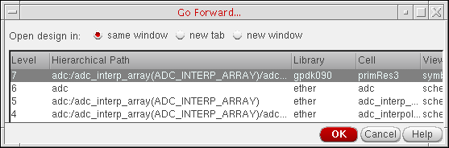

Moving Forward through a Design
Use the Forward icon to move forward to cells/cellviews that have already been visited using the Back icon. Continued selection of this option allows you to move forward through successive views, dependent upon availability.
Forward can only be used if Back has been used at least once, and if no other cell/cellview has been opened since the last execution of Back.
Use the Forward drop-down icon (red triangle) to display a list of previously displayed cellviews. The list presented allows you select a view and navigate straight to it without having to repeatedly scroll forward. The cellview at the top of the drop-down list represents the most recently viewed cellview.
The maximum number of cellviews displayed at a time in the drop-down list is five. When the number of possible cellviews to go forward to exceeds five, an additional more menu item appears on the drop-down list.
To move forward through the extended hierarchy:
-
On the Go toolbar, click the drop-down icon to the right of the Forward button.
A drop-down menu appears. -
Click more.
The Go Forward form appears.You can resize the form by dragging an edge or corner to the dimensions you want. - Select a level.
-
Click OK.
The program restores the selected level on the schematic pane.
Related Topics
Moving Up and to the Top of a Design
Return to top